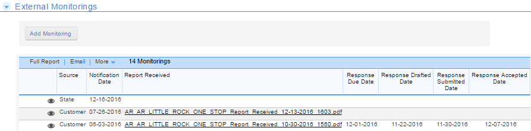
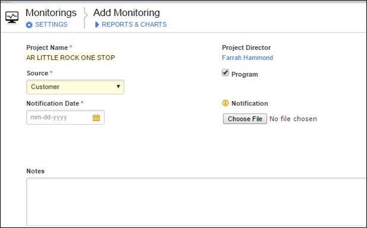

External Monitoring
Quality Assurance Reviews from the customer, state, county, federal, etc. that have been received should be uploaded in this section. In addition to the upload, response status should also be documented. In order to add a monitoring, just click Add Monitoring.

Click Add Monitoring -
Source -Refers to the entity that performed the review
Select Program or Fiscal Review
Choose file- Select the review to upload
Don't forget to

Created with the Personal Edition of HelpNDoc: Free help authoring tool